My McDonald's Story
I used to be a chubby kid growing up - I love McDonald’s and visited them at least four times a month. At my heaviest, I was 102kg and struggled with losing weight. When I was about 17 years old, I managed to shed away 20kg by counting my calorie intake and sweating my ass off playing basketball and running daily.
One time, after one of my usual basketball sessions, my friends suggested going to McDonalds for supper. I decided to join them as I felt that I had burnt enough calories during the basketball session. I ordered a meal which consisted of 20 pieces of McNuggets, large fries and a large Coke.
I remember thinking to myself, “So what’s the total calories for this meal?” and “How would I know if the meal I’ve ordered fits my recommended daily calories intake?”. This sparked off an idea to create an app that would give me enough information about food items on the McDonald’s menu to help me make better choices.
I started out by doing some research on McDonald’s — I went to check out their website, app and also looked for references of their instores menu and this what I observed:
McDonald’s App
On the app, there is a “Nutrition” page hidden under the “More” tab. On the “Nutrition” tab, there are some broad categories like “Eat Light under 500 calories” for breakfast, lunch and dinner. From there, the full menu can be accessed; nutrition value will be displayed for some times when you click into them. For items with the nutrition value available, there will be a link to a Nutrition Calculator which allows you to select multiple food items from the menu to add up and see the total calories. Overall, this feature is not easily discoverable.
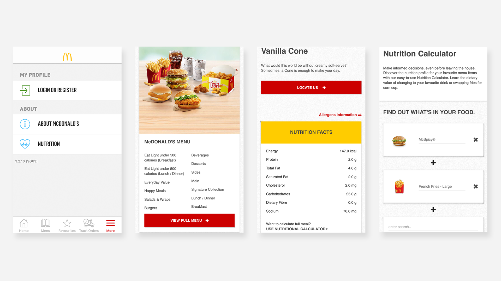Screenshot of the McDonald's App.McDonald’s website
The same Nutrition Calculator can be found at the footer of the website. Again, the location of the Nutrition Calculator is not very discoverable.
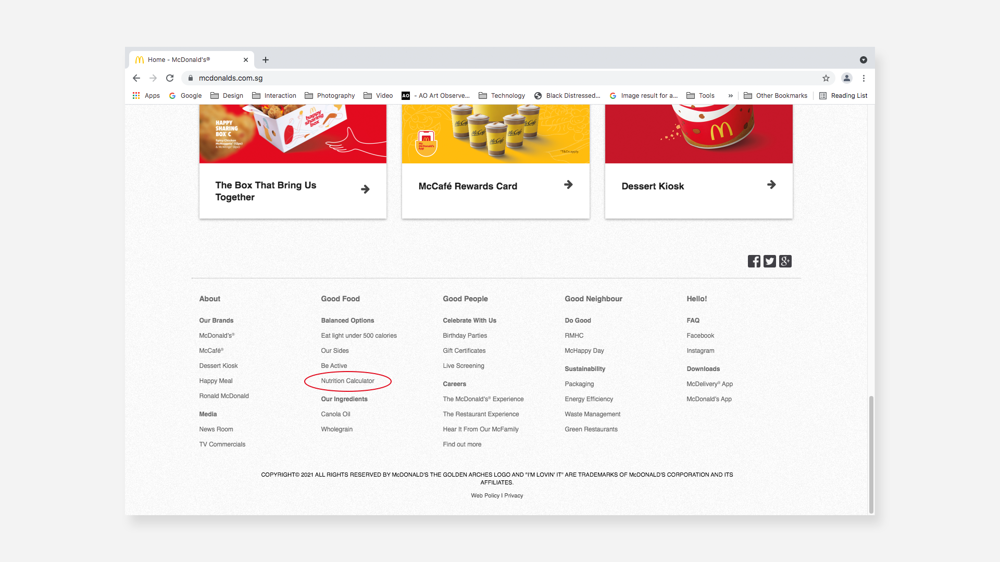Screenshot of the McDonald's Website.McDonald’s in-store menu board
Little to no nutrition-related information is being displayed — the only food items which are accompanied by caloric information are the salads or wraps.
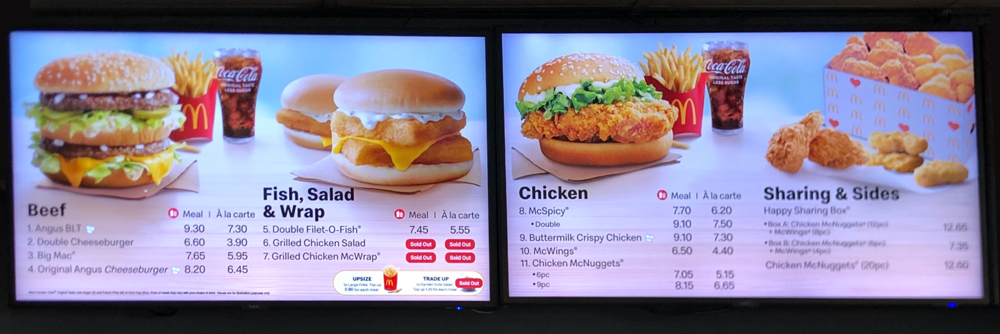Photo of McDonald's Store Menu 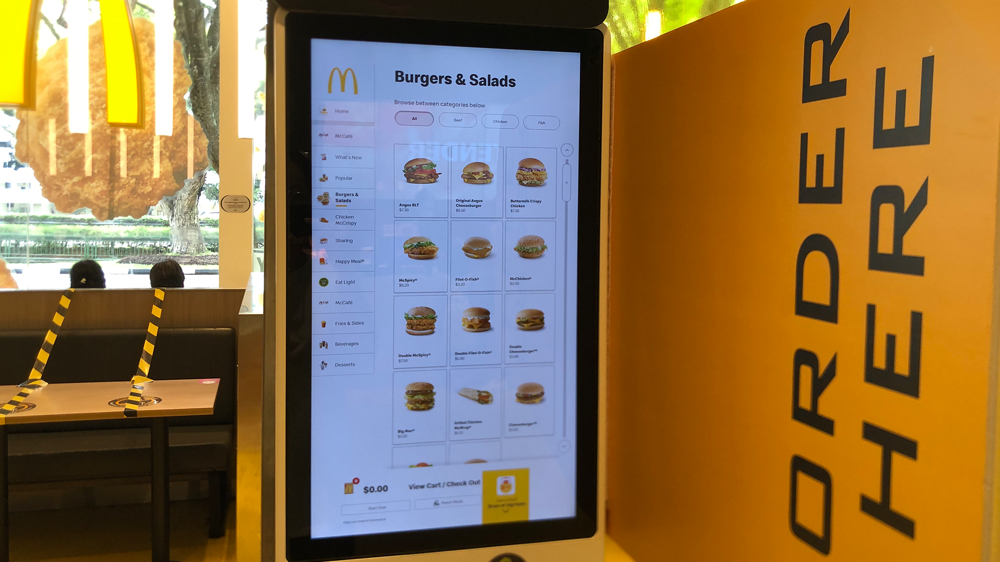Photo of McDonald's self-service kioskThe McDonald’s Nutrition Calculator is a rather basic tool – it simply adds up and presents to you the consolidated nutritional value of all the items you have selected. I wanted to take it one step further and create an app that would provide full transparency of the caloric information of each McDonald food item, as well as a straightforward way for users to compare between food items and find out if their selection would exceed their calorie budget based on gender*. With that, I set out to develop an interactive McDonald’s calorie app using Microsoft PowerBI.
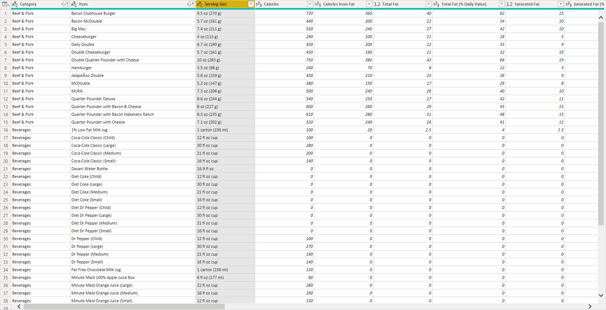Screenshot of the orginal dataset from Kaggle.For this project, I referenced a dataset from kaggle. This dataset provides the nutrition analysis of every menu item on the US McDonald's menu – this includes breakfast, beef burgers, chicken and fish sandwiches, fries, salads, soda, coffee and tea, milkshakes, and desserts.
Checking the quality of data
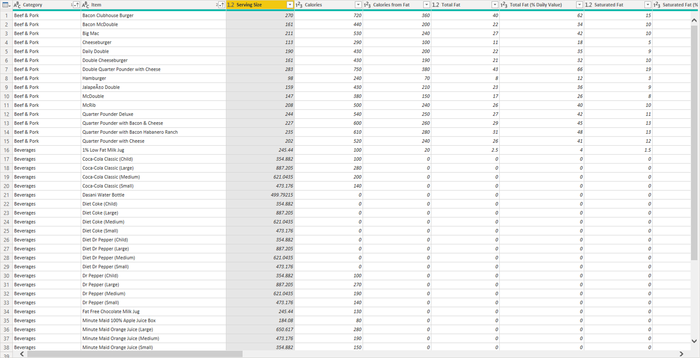Screenshot of dataset after I cleaned it up.To ensure the quality of the data, I did a check to identify and clean up any null value or incorrect data type from this dataset. Also, the original data under the ‘Serving size’ column was in various units (e.g. Ounce, Fluid Ounce, Gram and Millilitre) so I standardized it to a single unit – Gram. The Serving Size was also provided in a text format (object), which I then converted to a number (float64).
Creating new attributes: calorie budget
I also wanted users to also be able to track the calories against their own calorie budget. First, I went to find out the recommended daily calorie intake* for each gender – it’s 2,000 calories per day for women and 2,500 per day for men. I then created two new attributes for each gender:
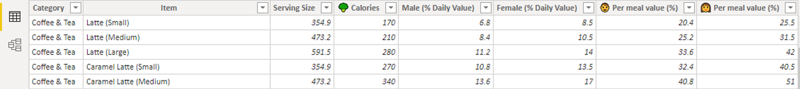Percentage daily value
This converts the calories of a food item into a percentage based on each gender’s recommended daily calories intake. E.g. If a man’s recommended daily calorie intake is 2,500 calories and a small McDonald’s Latte is 170 calories, this means that the small McDonald’s Latte will “cost” 6.8% of his daily calorie intake.
Per meal value (%)
This converts the calories of a food item into a percentage based on each gender’s average meal allowance. Each gender’s meal allowance is simply a division of the recommended daily calorie intake into three meals. E.g. If a woman's recommended daily calorie intake is 2,000, then her per meal calories allowance will be approximately 660 calories. If a small McDonald’s Latte is 170 calories, this means that the small McDonald’s Latte will be 25.5% of her per meal allowance. This allows a user to be able to gauge if a food item will fit into her calorie budget for each meal.
User interface
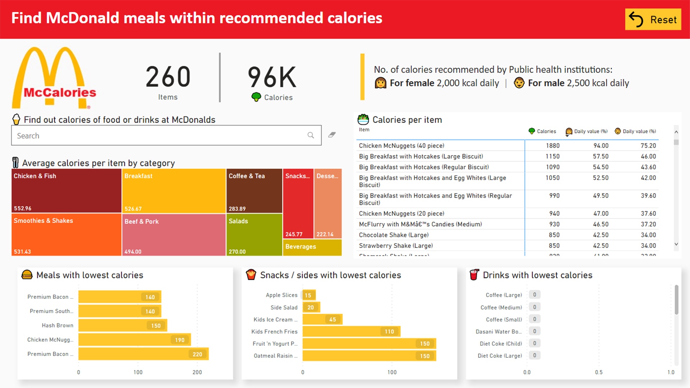There are 260 items on the McDonald’s menu.Search bar
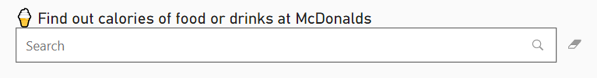A search bar has been placed on the dashboard to allow users to conveniently search for a food item.
Treemap: Average calories per item by category
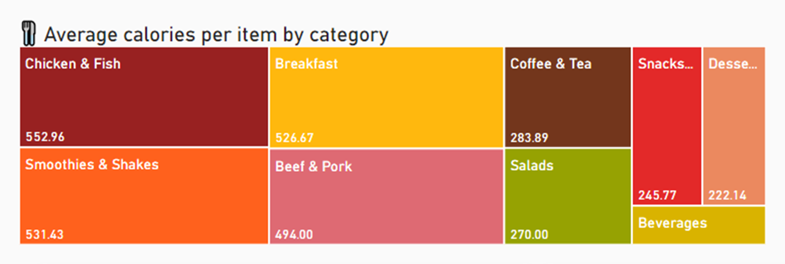On the treemap, the average calorie per item is displayed for each category – users are able to use this information to make quick selections. E.g. food items in the Chicken & Fish category have the highest calories on average so Beef and Pork might be a better choice if you’re counting your calories. Smoothies & Shakes have the second highest calorie on average, so you might want to think twice before you get that.
Bar charts: Food items with lowest calories
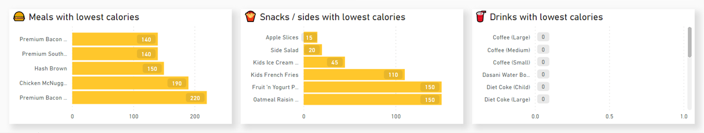I also grouped the categories into three broad categories (Meals, Snack and Drinks) and created charts to display food items with the lowest calories for each broad category. This provides a quick recommendation to the user.
Referring back to what I ordered after my basketball game, 20 pieces of McNuggets, large fries and a large Coke adds up to a total of 1730 calories – this is more than half of my daily intake.
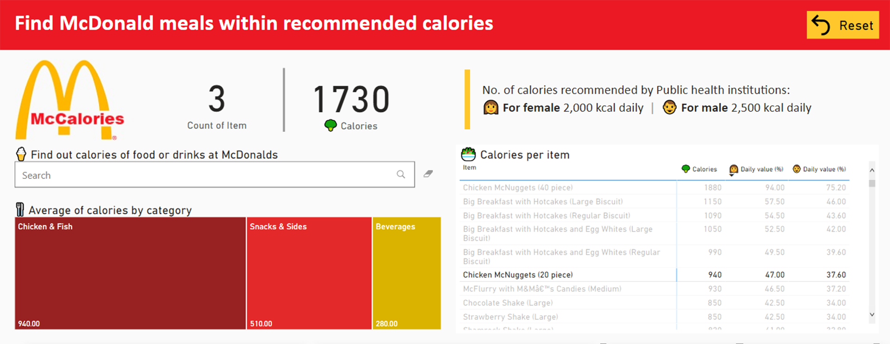Further insights
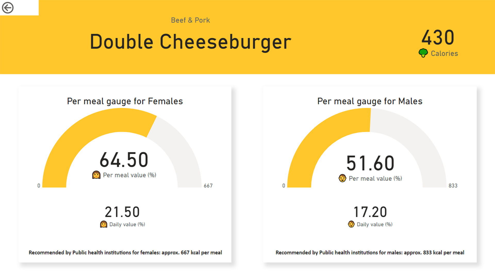A second-level page was also created for users to drill down into the food item they have selected. On this page, there is a meter to help users visualise and gauge if the selected food item will fit their calorie budget.
Note:I would have liked for the user to be able to select multiple items and see the details for those items. However, upon research, I found out that this version of Power BI does not support the selection of multiple items when drilling through.
*Each person's calorie budget may differ based on their height, weight, age, gender and more. Taking the project timeline into consideration, I’ve based the calorie budget on just one factor – gender.
2 This information was taken from: https://www.nhs.uk/common-health-questions/food-and-diet/what-should-my-daily-intake-of-calories-be/